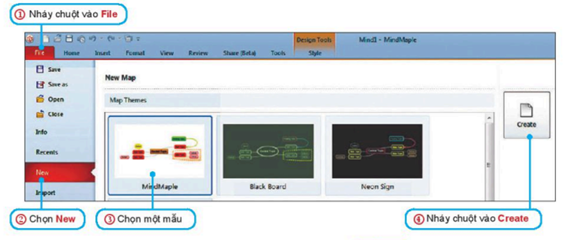

- Để ghi lại thông tin về một chủ đề nào đó, chúng ta có rất nhiều cách, ví dụ như: liệt kê bằng văn bản, dùng bảng biểu, dùng sơ đồ,...Một trong các cách đó là dùng sơ đồ tư duy.
- Sơ đồ tư duy là phương pháp trình bày thông tin một cách trực quan bằng cách sử dụng văn bản, hình ảnh và các đường nối.
- Sơ đồ tư duy tận dụng tối đa khả năng ghi nhận hình ảnh của bộ não, giúp chúng ta dễ dàng ghi nhớ chi tiết, tổng hợp hay phân tích vấn đề.
Để tạo sơ đồ tư duy, em có thể vẽ thủ công hoặc sử dụng phần mềm trên máy tính. Dù thực hiện theo cách nào thì việc tạo Sơ đồ tư duy cũng thực hiện theo các bước sau đây:
- Viết chủ đề chính ở giữa tờ giấy. Dùng hình chữ nhật, elip hay bất cứ hình gì em muốn bao xung quanh chủ đề chính.
- Từ chủ đề chính, vẽ các chủ đề nhánh.
- Phát triển thông tin chi tiết cho mỗi chủ đề nhánh, lưu ý sử dụng từ khoá hoặc hình ảnh.
- Có thể tạo thêm nhánh con khi bổ sung thông tin vì sơ đồ tư duy có thể mở rộng về mọi phía.
Nên sử dụng màu sắc khi tạo sơ đồ tư duy vi màu sắc có tác dụng kích thích não bộ.
Có nhiều cách giúp chúng ta tạo Sơ đồ tư duy trên máy tính như sử dụng các công cụ chènhình khối, sơ đồ trong phần mềm soạn thảo văn bản, công cụ vẽ hình trong các phần mềm xử lí ảnh,...
Tuy nhiên, có nhiều phần mềm chuyên dùng cho việc tạo sơ đồ tư duy như: MindMaple Lite, FreeMind, iMindMap, Mindmaple, Mind Manager,... Các phần mềm này cho phép chúng ta tạo sơ đồ tư duy dễ dàng, chính xác và nhanh chóng.
Nhiệm vụ: Sử dụng phần mềm sơ đồ tư duy để tạo sơ đồ tư duy ghi lại các nội dung có trong cuốn sổ lưu niệm của lớp đã được hoàn thành ở Hoạt động 3.
- Sau khi khởi động, giao diện phần mềm được mở ra như hình sau:
- Thực hiện các bước tạo Sơ đồ tư duy theo hướng dẫn trong hình sau:
- Sơ đồ tư duy được tạo ra với chủ đề chính là một khung Central Topic . Nháy chuột vào khung để nhập tên chủ đề chính SỐ LƯU NIỆM LỚP BA .